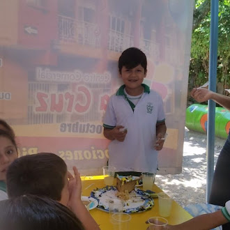

En esta página hablaré sobre mi proceso educativo.
Inicié mis estudios en el jardín Niño Jesús de Belén, donde cursé transición. Después estudié primero y segundo de primaria en el Colegio Infantil Colombianitos.
Continué tercero de primaria en el Colegio José Antonio Galán de Bogotá. Luego cursé cuarto y quinto en el Colegio INSCOOP de Bogotá. En sexto estudié en el Colegio Nuestra Señora de la Presentación.
Actualmente estudio en el Colegio San José de Guanentá, donde curso grado once en la especialidad de Sistemas. Lo cual me graduaré.
